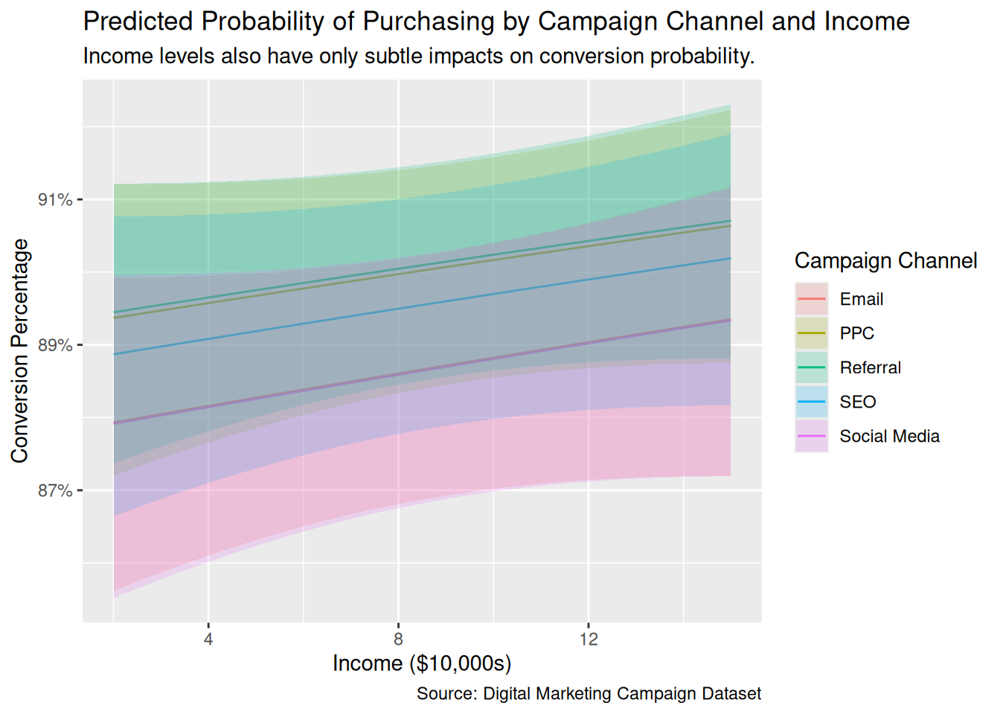
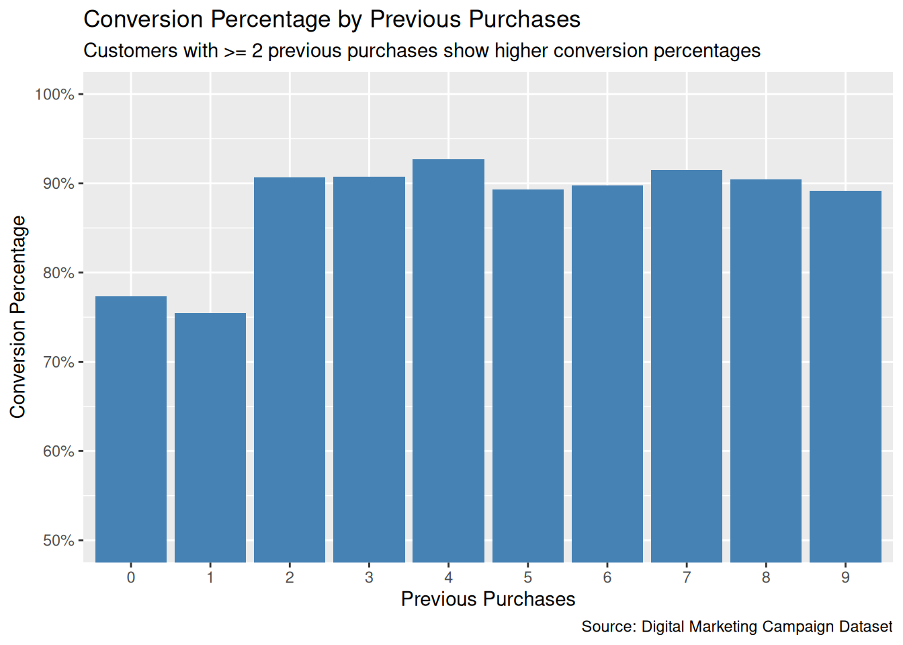

| Logistic Regression Model: Conversion by Campaign Channel | ||||||
| Estimating the effect of different campaign channels on user conversion rates | ||||||
| term | estimate | std.error | statistic | p.value | conf.low | conf.high |
|---|---|---|---|---|---|---|
| (Intercept) | 1.90328904 | 0.07542202 | 25.2351905 | 1.646906e-140 | 1.75808699 | 2.0538959 |
| CampaignChannelPPC | 0.11572922 | 0.10736596 | 1.0778948 | 2.810807e-01 | -0.09471835 | 0.3264151 |
| CampaignChannelReferral | 0.11855501 | 0.10640599 | 1.1141762 | 2.652036e-01 | -0.09010655 | 0.3272568 |
| CampaignChannelSEO | 0.05894195 | 0.10798082 | 0.5458557 | 5.851651e-01 | -0.15267004 | 0.2708742 |
| CampaignChannelSocial Media | -0.01697725 | 0.10698886 | -0.1586824 | 8.739191e-01 | -0.22677324 | 0.1928706 |
| Source: Digital Marketing Campaign Dataset | ||||||
Model and Analysis
Question
Causal: What is the average causal effect of getting an email, compared to seeing a social media post, on the probability that a customer purchases a product?
Variables
Units: Each customer identified by their unique user id.
Covariates: Age, Gender, Income, AdSpend, WebsiteVisits, PagesPerVisit, TimeOnSite, SocialShares, PreviousPurchases.
Treatment: CampaignChannel.
Outcome: Conversion.
Justice
Counter-assumption to validity: The campaign channel is not specific enough. The “Email” treatment might be the same as the “Referral” treatment if the referral was just done by email. So, the CampaignChannel might not have valid correspondence to the treatments we really want to measure in the Preceptor Table. Therefore, we need more information on each treatment within CampaignChannel to determine if they are distinct.
Counter-assumption to stability: The data is from an experiment that took place two years ago, 2024, and the effect of advertisements on users may have changed from 2024 to 2026. Although two years might not have much of an effect, changes may have occured in trends, in the economy which may determine if users can afford to purchase certain products, and in technology. So, the slope on the effect of watching an advertisement might have changed between 2024 and present day, which is what we want to predict.
Counter-assumptions to representativeness: The data might not represent the population. In this dataset, the conversion rates for all Campaign Channels are around 70% to 80%, which seems unrealistic. However, we’re only trying to answer the causal effect, which is between treatments, so this shouldn’t be a major concern if the experiment was done correctly. Another subtle thing to note is how the data is comprised of 60% females and 40% males, a slight disproportionate distribution that may or may not add a small bias. Furthermore, the population in the dataset might not represent the present day population we want to make estimates for.
Counter-assumptions to unconfoundedness: We don’t know if treatment assignment was random. This is important because if treatment assignment was not random, our final estimates would be biased. For example, if users who are more likely to purchase a product are more likely to be assigned to a specific treatment group, then our estimates of the causal effect would change drastically.
Probability Family: Bernoulli
Link Function: Logit link (logistic regression)
Models
Interpretation
Social Media resulted in an average decrease in the probability of purchasing a product. The log-odds of a customer purchasing the product is -0.0170 lower for a customer who used Social Media (compared to Email), with a confidence interval of -0.227 to 0.193. This confidence interval passes zero, meaning that the effect of Social Media on the probability of purchasing a product compared to Emailis not statistically significant. The estimate is so small that it’s basically zero.
| Logistic Regression Model: Conversion with Campaign Channel and other Covariates | ||||||
| Adjusting for other covariates | ||||||
| term | estimate | std.error | statistic | p.value | conf.low | conf.high |
|---|---|---|---|---|---|---|
| (Intercept) | -1.251766743 | 0.215026049 | -5.8214656 | 5.833382e-09 | -1.673523949 | -0.830453708 |
| CampaignChannelPPC | 0.143038543 | 0.111479683 | 1.2830907 | 1.994603e-01 | -0.075453056 | 0.361787849 |
| CampaignChannelReferral | 0.151351105 | 0.110444686 | 1.3703793 | 1.705685e-01 | -0.065191257 | 0.367986435 |
| CampaignChannelSEO | 0.091471318 | 0.112139921 | 0.8156892 | 4.146779e-01 | -0.128270027 | 0.311560755 |
| CampaignChannelSocial Media | -0.001645491 | 0.111433323 | -0.0147666 | 9.882184e-01 | -0.220125182 | 0.216925604 |
| Age | 0.001329212 | 0.002368820 | 0.5611282 | 5.747102e-01 | -0.003314038 | 0.005973525 |
| GenderMale | 0.013391558 | 0.072238754 | 0.1853791 | 8.529317e-01 | -0.127764600 | 0.155480771 |
| Income | 0.010848976 | 0.009424448 | 1.1511524 | 2.496695e-01 | -0.007618696 | 0.029332326 |
| AdSpend | 0.014583084 | 0.001291497 | 11.2916131 | 1.443626e-29 | 0.012063960 | 0.017127657 |
| WebsiteVisits | 0.018500774 | 0.002484879 | 7.4453406 | 9.669459e-14 | 0.013644092 | 0.023386722 |
| PagesPerVisit | 0.131286056 | 0.013834013 | 9.4900922 | 2.308300e-21 | 0.104273643 | 0.158513859 |
| TimeOnSite | 0.100293633 | 0.008605248 | 11.6549386 | 2.165363e-31 | 0.083508968 | 0.117248310 |
| SocialShares | -0.001014298 | 0.001224839 | -0.8281070 | 4.076099e-01 | -0.003416563 | 0.001385744 |
| PreviousPurchases | 0.128219556 | 0.012521854 | 10.2396620 | 1.316957e-24 | 0.103780658 | 0.152876168 |
| Source: Digital Marketing Campaign Dataset | ||||||
Interpretation
Main: Adjusting for the covariates, the coefficient for Social Media campaigns is -0.0017, with a confidence interval of -0.220 to 0.217. The estimate decreased by a factor of ten compared to the previous model. This means that Social Media and Email have relatively the same effect on conversion rates. Besides that, this model also tells us the coefficients for all the other variables:
Age: For every one additional year of age, the log-odds of purchasing the product increases by 0.00133, with a confidence interval of -0.00331 to 0.00597. This interval includes zero, meaning it is not statistically significant. So, age does not have a clear effect on the probability of purchasing the product.
Gender: For male users compared to female users, the log-odds of purchasing the product increases by 0.0134, with a confidence interval of -0.128 to 0.155. This interval includes zero, meaning it is not statistically significant. So, gender does not have a clear effect on the probability of purchasing the product.
Income: For every additional $10,000 of income, the log-odds of purchasing the product increases by 0.0108, with a confidence interval of -0.00762 to 0.0293. This interval includes zero, meaning it is not statistically significant. So, income does not have a clear effect on the probability of purchasing the product.
AdSpend: For every additional $100 spent on advertising, the log-odds of purchasing the product increases by 0.0146, with a confidence interval of 0.0121 to 0.0171. This interval doesn’t pass zero, meaning it’s statistically significant. So, higher ad spend increases the probability of purchasing the product.
WebsiteVisits: For every one additional website visit, the log-odds of purchasing the product increases by 0.0185, with a confidence interval of 0.0136 to 0.0234. This interval doesn’t pass zero, meaning it’s statistically significant. So, visiting the website more often increases the probability of purchasing the product.
PagesPerVisit: For every one additional page viewed per visit, the log-odds of purchasing the product increases by 0.131, with a confidence interval of 0.104 to 0.159. This interval doesn’t pass zero, meaning it’s statistically significant. So, viewing more pages per visit increases the probability of purchasing the product.
TimeOnSite: For every one additional minute of time spent on the site, the log-odds of purchasing the product increases by 0.100, with a confidence interval of 0.0835 to 0.117. This interval doesn’t pass zero, meaning it’s statistically significant. So, spending more time on site increases the probability of purchasing the product.
SocialShares: For every one additional social share, the log-odds of purchasing the product decreases by 0.00101, with a confidence interval of -0.00342 to 0.00139. This interval includes zero, meaning it is not statistically significant. So, social sharing does not have a clear effect on the probability of purchasing the product.
PreviousPurchases: For every one additional previous purchase, the log-odds of purchasing the product increases by 0.128, with a confidence interval of 0.104 to 0.153. This interval doesn’t pass zero, meaning it’s statistically significant. So, having more previous purchases increases the probability of purchasing the product.
Data Generating Mechanism Formula
\[\begin{aligned} \widehat{\text{logit}(P(\text{Conversion} = 1))} &= -1.25 + 0.143 \cdot \text{CampaignChannel}_{\text{PPC}} + 0.151 \cdot \text{CampaignChannel}_{\text{Referral}} \\ &\quad + 0.0915 \cdot \text{CampaignChannel}_{\text{SEO}} - 0.00165 \cdot \text{CampaignChannel}_{\text{Social Media}} \\ &\quad + 0.00133 \cdot \text{Age} + 0.0134 \cdot \text{Gender}_{\text{Male}} + 0.0108 \cdot \text{Income}_{10k} \\ &\quad + 0.0146 \cdot \text{AdSpend}_{100} + 0.0185 \cdot \text{WebsiteVisits} + 0.131 \cdot \text{PagesPerVisit} \\ &\quad + 0.100 \cdot \text{TimeOnSite} - 0.00101 \cdot \text{SocialShares} + 0.128 \cdot \text{PreviousPurchases} \end{aligned}\]
Temperance
| Average Comparisons (Marginal Effects) | |||||
| Estimating average causal effects of campaign channels and covariates | |||||
| term | contrast | estimate | std.error | conf.low | conf.high |
|---|---|---|---|---|---|
| AdSpend | +1 | 0.0014580487 | 0.0001282135 | 0.0012067548 | 0.0017093426 |
| Age | +1 | 0.0001334774 | 0.0002377725 | -0.0003325480 | 0.0005995029 |
| CampaignChannel | PPC - Email | 0.0144452149 | 0.0112683300 | -0.0076403061 | 0.0365307360 |
| CampaignChannel | Referral - Email | 0.0152434222 | 0.0111438456 | -0.0065981139 | 0.0370849583 |
| CampaignChannel | SEO - Email | 0.0093932444 | 0.0115136478 | -0.0131730906 | 0.0319595794 |
| CampaignChannel | Social Media - Email | -0.0001741102 | 0.0117908913 | -0.0232838324 | 0.0229356120 |
| Gender | Male - Female | 0.0013441259 | 0.0072440480 | -0.0128539472 | 0.0155421990 |
| Income | +1 | 0.0010860366 | 0.0009400011 | -0.0007563317 | 0.0029284049 |
| PagesPerVisit | +1 | 0.0126291325 | 0.0012748417 | 0.0101304886 | 0.0151277763 |
| PreviousPurchases | +1 | 0.0123467390 | 0.0011562859 | 0.0100804603 | 0.0146130178 |
| SocialShares | +1 | -0.0001019327 | 0.0001231303 | -0.0003432637 | 0.0001393983 |
| TimeOnSite | +1 | 0.0097476637 | 0.0008092601 | 0.0081615431 | 0.0113337843 |
| WebsiteVisits | +1 | 0.0018473662 | 0.0002462965 | 0.0013646340 | 0.0023300984 |
| Source: Digital Marketing Campaign Dataset | |||||
Interpretation - Answering the initial question
Adjusting for all the covariates, the average causal effect of Social Media as a means of campaigning, compared to receiving an Email as a means of campaigning, on the probability that a customer purchases a product is -0.000174, with a confidence interval between -0.023284 to 0.022936. In other words, compared to Emails, receiving a Social Media treatment resulted in a 0.0174 percentage point increase in the probability that you’ll buy a product (confidence interval: -2.3284 to 2.2936 percentage points). However, not only is this an extremely small probability difference, but also the confidence intervals pass zero. Therefore, there isn’t really a causal change between Social Media and Email.
Graphs
Key note: Realistic conversion rates are likely much lower in percent, but should share the same slope. (Distribution shift)




